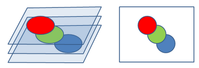

Работа сайта
Сайт является 3D укладкой 2D слоев, обычно стилизованный СSS и оснащенный JavaScript.
Работа сайта. Рабочее пространство
У каждого сайта есть оси XYZ. X - ширина(1D), Y - высота(2D), Z - уровень слоя(3D).
Вы спросите что за слой, и почему 3D, если я вижу все в 2D - плоским?
- Отвечаю: Все элементы имеют свое положение по высоте. Представьте себе коробку в которую мы
набросали кучу мягких игрушек, закрыли и у нас лишь одна прозрачная стенка.
Теперь скомпрессуем коробку, и когда мы посмотрим через прозрачную стенку внутрь нее то мы увидим как раз
сложенные вместе "слои" мягких игрушек.
Этой стенкой в случае сайта является экран браузера, а мягкими игрушками наши элементы.
Вот так это выглядит:

По умолчанию у всех элементов стоит авто-настройка - 0. Однако мы можем задать и свое значение через CSS:
z-index: [уровень]; или JavaScript:
element.zIndex = [уровень];
element.style.zIndex = "[уровень]"; // Через стили
Обычно его используют в таких элементах как header, footer, nav и разных выпадающих меню.
Концепция сервер-клиент
Не считая обычные локальные сети, эта концепция присутствует везде. Суть ее заключается в обмене сообщениями между сервером и клиентом. Клиентом является сам пользователь, и то что происходит только у него, локально, не обращаясь к серверу. Сервер же является "главным управлением", он раздает всем клиентам указания и хранит данные.
Например на странице банка когда мы переходим на вкладку "История переводов", клиент просит у сервера эту историю, после чего обрабатывает скриптом и добавляет в список который мы видим.
Сервер очевидно в качестве ответа может вернуть клиенту что угодно, но не факт что клиент это разберет. Обычно разработчики стараются максимизировать совместимость, а также добавляют обработку ошибок.
Компиляция
Теперь то, как браузер компилирует(сканирует, понимает и выполняет) наш код.
У любого документа который мы подвязываем через секцию head есть возможность использования флага defer.
Defer означает использование документа уже после компиляции сайта(то есть прогрузки HTML и CSS).
Браузер компилирует сайт в такой последовательности:
Применение defer очень важно, ведь большинство сайтов само-воспроизводимые,
то есть строят себя сами, и например в случае с JavaScript это безусловно очень полезный элемент работы.
 Работа сайта
Работа сайта